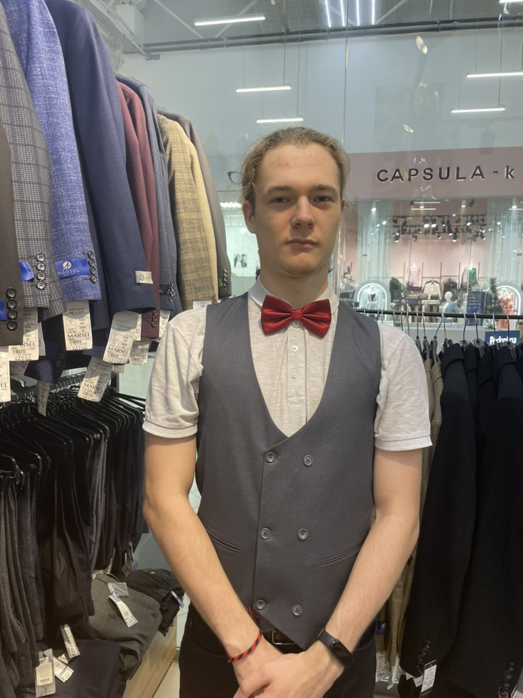

Меня зовут Жданов Пётр Михайлович

Я учусь в Институте iSpring в группе ПС-12
Я увлекаюсь программированием (занимаюсь им с 2020 года), особенно мне нравится процесс решения задач, когда новые идеи настигают в самых нехжиданных местах.
Также я люблю музыку и умею играть на гитаре, хоть и давно не практиковался.
Люблю компьютерные игры, отдаю предпочтение инди сегменту индустрии, потому что именно там можно найти что-то интересное (в том числе для вдохновения)